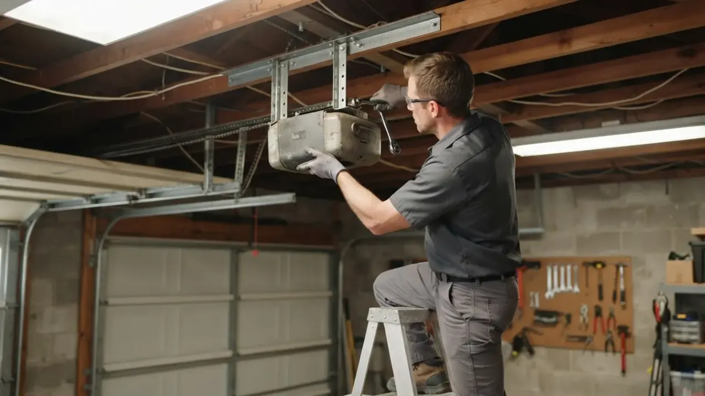

Same-day LiftMaster, Chamberlain and Genie installs across Hillsborough County
Garage Door Opener Replacement in Tampa Done Right the First Time
Grinding, humming without lifting, or quitting mid-cycle usually means the opener has earned retirement, and replacing it beats chasing parts for a 12-year-old motor. LiftMaster, Chamberlain, Genie and Sommer units ride on the truck, every photo eye and wall keypad is tested, and the old unit is hauled away. Most jobs finish in two to four hours.
Live dispatcherUpfront optionsBacked workmanship
The basics
What Is Garage Door Opener Replacement?
Garage door opener replacement is the swap of a worn-out motor unit for a new one, with fresh sensors, remotes, and safety settings to match. It is the right call when the opener has failed repeatedly, the parts are discontinued, or the repair costs more than the unit is worth. Openers mounted in a garage that hits 110 degrees in July cook their logic boards years early, and power surges from storm season finish the job. Before we install anything, we test the door by hand: if it needs more than 10 pounds of lift or drops on its own, we tell you, because a door like that will burn out a new motor in months.
What's included
What's Included in Opener Replacement
A replacement is more than a motor swap: the sensors, limits, and remotes all get set up fresh. Here is what is included.
New opener and rail
Head unit, rail, chain or belt, and all mounting hardware come with the job. LiftMaster, Chamberlain, Genie, Craftsman, Linear and Marantec units are carried on the truck, so quietness and features are yours to pick without a special order.
Safety sensor installation
Fresh photo eye sensors go on at the correct height, wired and aligned, and the auto-reverse is tested with a 2x4 laid flat on the floor. UL 325 requires that test, and it is never skipped.
Remote and keypad programming
Every remote you own gets programmed along with the wall mount keypad, and adding more later is shown to you on the spot. A smart opener with MyQ is connected to your Wi-Fi, with a walkthrough of the app.
Travel limit and force setting
We set the open and close limits and dial in the force adjustment so the door stops correctly at the floor and does not slam. Limits set wrong are what make a new opener reverse for no reason.
Old unit haul-away
We remove the old opener, rail and hardware and take it with us. Nothing is left in the garage for you to haul away.
Door balance check
Before we install anything, we test the door by hand. If it needs more than 10 pounds of lift or drops on its own, we tell you, because a new motor on an unbalanced door is a short-lived motor.
Service overview
What garage door opener replacement in Tampa actually involves
Tampa homes take a beating from salt air, summer heat and afternoon thunderstorms. Openers mounted in a garage that hits 110 degrees in July cook their logic boards years early, and power surges from storm season finish the job. Older units from the 1990s often fail the UL 325 standard outright, which is a safety problem, not just an inconvenience.
Belt-drive and DC motor units from LiftMaster and Chamberlain cut the rattle that comes from worn opener gears and dry nylon garage door rollers. New openers pair with MyQ or the manufacturer app, so you can open the door for a delivery or a contractor from your phone, and every unit we install meets UL 325, with working photo eye sensors and auto-reverse.

How we workWe verify the cause, compare realistic options, and confirm the repair before we leave.
The service timeline
How our replacement process works
A replacement runs on a fixed order: prove the door is sound, quote one price, then install and test. These five steps follow it.
Phone diagnosis
Tell us what the door is doing: humming, blinking, reversing, or dead. The symptom tells us whether the opener is the fault or the door behind it is.
On-site inspection
We test the door's balance, check the torsion springs, galvanized steel cables and garage door tracks, and confirm the opener is actually the failed part. A new motor is never sold onto a door that has not been checked.
Upfront quote
One price covers the new opener, labor, haul-away, and remote programming, with nothing discovered halfway through. LiftMaster, Chamberlain, Genie, Craftsman, Linear, and Marantec units are carried at different price points, so the choice fits the budget, not the other way round.ick what fits your budget.
Installation
The old head unit and rail come off, the new opener goes up, travel limits are set, and the door is balanced. Sensor alignment comes last, once the door is running true.
Testing and walkthrough
We cycle the door ten times, test the safety reverse with a 2x4 laid flat, program your remotes and keypad, and show you how to use the manual release. The door has to pass ten clean cycles before we leave.
Timing questions
How long does garage door opener replacement take in Tampa?
A standard replacement takes two to four hours from arrival to final cycle test. That covers removing the old unit, mounting the new rail and head, wiring the photo eye sensors, setting travel limits, and programming your remotes and keypad. If your door needs a new torsion spring or the tracks are bent, add an hour. We tell you upfront if the job will run long.
How long does a garage door opener replacement take?
A standard replacement takes three to five hours on site. That covers removing the old opener, fitting the new rail and motor, mounting the new sensors and wall control, programming the remotes and keypad, setting the travel limits and force, and testing everything. If the door needs a spring adjustment or the garage needs a new outlet, the visit can run longer, and the technician will tell you before starting.
Tools & methods
Tools and Methods We Use
A replacement uses the same kit as a repair, with the emphasis on fitting the new unit square and safe.
Garage door torsion spring winding bars
Winding bars are used to safely adjust or replace torsion springs when a door is out of balance. A replacement starts with the door, and the bars let us set its tension properly.
Garage door opener remote tester
A remote tester confirms whether a remote is transmitting and whether the opener's receiver is picking up the signal. Every remote is tested at full range before we leave.
Garage door sensor alignment tool
A sensor alignment tool aligns photo eye sensors precisely so the safety reverse works every time. New sensors are only as good as their alignment.
Garage door torque wrench
A torque wrench is how we torque rail bolts, mounting brackets and hinge screws to spec. A new opener vibrates loose when its brackets are tightened by feel.
Garage door track bender
A track bender straightens minor bends in the vertical and horizontal tracks so the door rolls clean. A bent track will make a brand-new opener sound old within weeks.
Garage door panel lift
A panel lift safely supports and positions door sections during panel or opener work. When a replacement turns up a panel that needs attention, the lift keeps that work safe.
Use cases
When to Replace Your Garage Door Opener
Replacements usually follow a failure that keeps repeating. These are two jobs where the new unit ended the cycle.

Storm-damaged opener restored in New Tampa
A July surge took out the logic board on a 9-year-old Chamberlain unit in New Tampa. → How we handle it: We install a new Chamberlain with battery backup and MyQ, connect it to their Wi-Fi, and program the wall keypad and two vehicle remotes.
Quiet upgrade for a South Tampa rental
A property manager was fielding tenant complaints about three noisy chain-drive openers, two with failing safety sensors and one whose remote worked only now and then. → How we handle it: All three openers become belt-drive Genie units with new photo eye sensors and fresh remotes for each tenant.
Booking questions
Who replaces garage door openers in Tampa?
We do. Our technicians handle garage door opener replacement across Tampa and Hillsborough County, including South Tampa, New Tampa, Brandon and Riverview. We carry LiftMaster, Chamberlain, Genie and Sommer units on the truck, follow UL 325 safety standards, and warranty both parts and labor. Call and we'll schedule a same-day or next-day visit.
Problems we solve
Problems We Solve With Opener Replacement
Replacement becomes the right call when the same faults keep returning. Here are the signs we see most.
Opener runs but the door won't lift
An opener that runs while the door will not lift usually has a stripped gear or a motor that has lost its torque. When the unit has already been repaired more than once, replacement costs less than another rebuild.
Remote only works from a few feet away
A remote that only works from a few feet away usually has a failing receiver or a transmitter that has lost range. A new unit with fresh remotes and a tested receiver ends the guessing.
Door reverses or won't close at all
A door that reverses or will not close at all usually has sensors that will not hold alignment or a logic board that has lost its settings. New sensors and a new board, set up together, fix both.
Opener is loud enough to wake the house
An opener loud enough to wake the house is usually a chain drive with worn gears on a door that has never been balanced. A belt-drive unit on a balanced door is the quiet fix, not just a new motor.
About this service
Will a new garage door opener make my door quieter in Tampa?
Often, yes, especially if the old unit uses a chain drive and the new one uses a belt drive. A belt drive opener is noticeably quieter, which matters if there is a bedroom above the garage. Keep in mind that worn rollers and dry hinges also make noise, so a new opener will not fix a noisy door on its own. The technician can tell you how much of the noise is the opener and how much is the door.
What happens to my old garage door opener when it is replaced in Tampa?
The technician removes the old motor unit, rail, and wall control, and takes them away for disposal or recycling unless you ask to keep them. The new opener is fitted in its place, the remotes and keypad are programmed, and the safety sensors are aligned and tested. You are shown how the new opener works, including the manual release, before the technician leaves.
How do I know if my garage door opener needs replacing instead of repairing?
It comes down to age and the cost of the part. A cheap part on an opener under ten years old is usually worth repairing. But a logic board on an opener over 15 years old can cost a large share of a new opener, and the rest of the unit is just as old. An opener with no safety sensors or with a fixed code is also worth replacing whatever the fault is. The technician prices both options so you can decide.
Will my old remotes work with a new garage door opener?
No. Old remotes use a different code system from a new opener, and they will not pair with it. New remotes are programmed to the new opener on the day, along with the keypad if you have one. Your old remotes should be cleared and recycled, because a remote that is no longer paired is still a remote that could be found and tried.
Pricing process
What Opener Replacement Costs in Tampa
$350 - $850 installed, depending on opener model, door size and any additional parts
Opener type and brand
Chain-drive units are cheaper and louder. Belt-drive and DC motor units from LiftMaster, Chamberlain and Genie cost more, run quieter, and hold up longer in a hot Tampa garage, while smart openers with Wi-Fi add to the price.
Door size and weight
A single-car door needs a lighter-duty opener than a 16-foot double door. The motor has to match the door weight, and an undersized unit will fail early under daily use.
Condition of springs and cables
If the torsion springs are worn or a cable is frayed, they are replaced during the same visit as the opener. A new opener on worn springs is a motor that will burn out early, so the springs are fixed first.
Cost factors at a glance
| Cost factor | What affects the price |
|---|---|
| Typical range on this page | $350 - $850 installed, depending on opener model, door size and any additional parts |
| Opener type and brand | Chain-drive units are cheaper and louder. |
| Door size and weight | A single-car door needs a lighter-duty opener than a 16-foot double door. |
| Condition of springs and cables | If the torsion springs are worn or a cable is frayed, they are replaced during the same visit as the opener. |
Ranges are the ones stated on this page; you get a written estimate before work starts.
Cost questions
How much does garage door opener replacement cost in Tampa?
Most garage door opener replacement in Tampa runs $350 to $850 installed, depending on the unit and door size. A basic chain-drive Chamberlain sits near the low end; a quiet belt-drive LiftMaster with battery backup and MyQ lands higher. That price includes the opener, labor, haul-away, and remote programming. We quote before we start, so the number you hear is the number you pay.
Customer reviews
What Tampa Customers Say
★★★★★
“My old Craftsman opener finally died after 15 years. They came out the same afternoon, showed me three options, and installed a belt-drive LiftMaster in about three hours. It's so quiet I had to check it was actually running. They programmed both remotes and the keypad and hauled the old unit away. Fair price, no upsell.”
★★★★★
“Our door kept reversing halfway down. I figured we needed a whole new opener. The tech tested everything and found a misaligned photo eye sensor plus a worn gear. He gave us the repair price and the replacement price, and we chose replacement since the unit was 11 years old. Done in one visit. Honest and quick.”
★★★★★
“I manage six rental units in South Tampa and use these guys for all the garage doors. They've replaced openers at three properties now, always same-day, always a flat quote before work starts. Tenants get their remotes programmed and I get the warranty paperwork by email. That's how it should work.”
Book with confidence
What to Look for Before You Book
A replacement is a bigger purchase than a repair, so the quote has to be complete. Check these before you agree.
- Before any work starts, ask for the licence number and confirm it matches the company name on the quote.
- Ask whether the door will be balance-tested before the new opener goes on, and what happens if it fails the test.
- Insist on one written price covering the opener, labour, haul-away, and remote programming, with no extras added later.
- Ask how long the opener and the labour are covered, and get that warranty in writing rather than as a promise.
- Check that the visit ends with a ten-cycle test, a safety reverse check, and the manual release shown to you.
- When the technician arrives, confirm the vehicle is marked and they can say which company sent them.
The decision
Opener Replacement vs Opener Repair: The Numbers That Decide It
The choice between repairing an opener and replacing it usually comes down to age and the cost of the part. A drive gear or a capacitor on an opener under ten years old is a repair, because the part is cheap and the opener has years left. A logic board on an opener over 15 years old is a different calculation, because the board alone can cost a large share of a new opener, and the rest of the opener, the motor, the rail, and the drive, is just as old. In that case the replacement is usually better value, and it comes with a new warranty and modern safety features.
There is also the question of what the old opener cannot do. Openers made before 1993 have no safety sensors, and openers from the 1990s and early 2000s often use fixed codes that are easy to copy. A new opener brings rolling-code security, a battery backup, and quieter running, which are real improvements, not just new features. The technician will price the repair and the replacement side by side, so the decision is made on numbers and on what the old opener lacks, not on a sales pitch.
- Repair it: a cheap part, such as a gear or a capacitor, on an opener under ten years old.
- Replace it: a logic board on an opener over 15 years old, where the part costs a large share of a new unit.
- Safety gap: an opener with no safety sensors or with a fixed code is worth replacing whatever the fault is.
- New warranty: a replacement comes with a fresh warranty on the motor and the parts.
- Both prices: the repair and the replacement are quoted together so you can decide on the numbers.
Choosing and deciding
Should I repair or replace my garage door opener in Tampa?
Replace it if the opener is over 10 to 12 years old, the logic board is fried, or the motor runs but won't lift the door. Repair makes sense for a failed remote, a misaligned photo eye sensor, or a stripped gear that costs under $200 to fix. We test the door and the opener on site and give you both numbers, so you decide with real information.
Is it worth replacing an old garage door opener in Tampa?
It usually is when the opener is over 12 to 15 years old, parts are no longer available, or it lacks safety sensors and an auto-reverse. A new opener is quieter, safer, and often works with a phone app and a battery backup. If your current opener only needs a gear or a sensor, a repair is cheaper, and the technician will tell you honestly which option makes sense for your unit.
The changeover
What Happens to Your Remotes, Keypad, and Sensors During a Replacement
Replacing the opener means replacing the system around it, and it helps to know what changes. The safety sensors are replaced with the new opener, because the sensors are matched to the opener model, and the old ones may not be compatible. The wall control is replaced too, and it is mounted in the same position. The remotes are new, and they are programmed to the new opener on the day, along with the keypad if you have one. Your old remotes will not work with the new opener, because they use a different code system, so they should be cleared and recycled.
The door itself does not change, but it is checked. The technician tests the balance before the new opener is connected, because a new opener should never be fitted to a door that is out of balance. The travel limits and the force settings are set for the new unit, and the safety systems are tested before the technician leaves. If the door needs a spring adjustment or a roller replacement, that is quoted separately, because the new opener will last far longer on a door that is in good shape.
- New sensors: the safety sensors are replaced with the new opener, because they are matched to the model.
- New remotes: programmed on the day, along with the keypad, and the old remotes will not work with the new unit.
- Wall control: replaced and mounted in the same position.
- Balance checked: the door is tested for balance before the new opener is connected.
- Full setup: travel limits, force settings, and safety tests are done before we leave.
Related services
Related Services

Garage Door Repair
General repair covers the whole system, not just the opener. If the door is off track, noisy, or binding as well, this is the service that fixes it all in one visit.
Garage Door Spring Repair
When a torsion spring snaps, the door turns into dead weight and the opener strains against it. We fit matched pairs, wind them with proper bars, and balance the door so it holds level.
Garage Door Opener Repair
After a storm-season surge, openers often hum, trip the breaker, or drop their remote pairing. We repair LiftMaster, Chamberlain, Genie and Craftsman units and check the safety reverse before we leave.Ready when you are
Get your garage door opener replacement in Tampa today
If your opener has failed more than once, or the repair costs more than the unit is worth, call now for a replacement quote. Most jobs finish in two to four hours, and the old unit leaves with us.

Talk with the local team
Request Garage Door Opener Replacement
Call, text or email and a real person answers, day or night. Tell us what the door is doing and we will give you a price range on the spot plus the soonest arrival window. Most calls placed before mid-afternoon get a same-day visit anywhere in Hillsborough County.